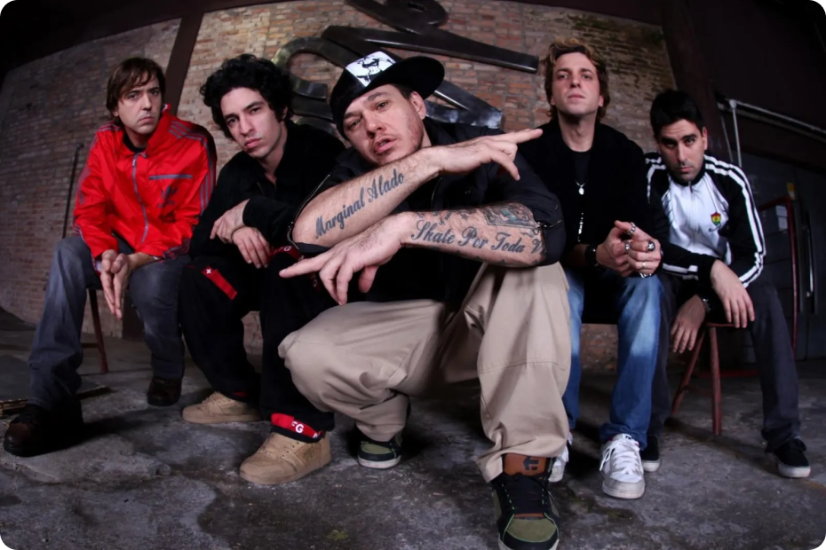

história
Por volta dos 21 anos, Alexandre (Chorão) esteve em um bar de Santos chamado Creperie, bêbado. Tinha se separado da sua namorada com quem era casado e assistia ao show de uma banda chamada Matrix. O vocalista saiu para beber água e Alexandre subiu ao palco. Teria dito: “Aí, agora é comigo!".